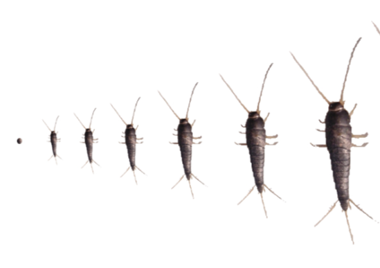
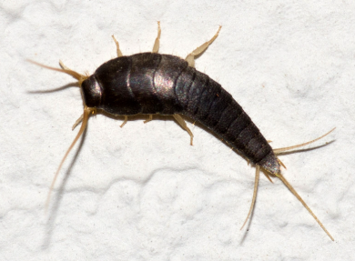
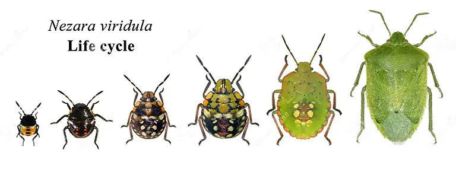
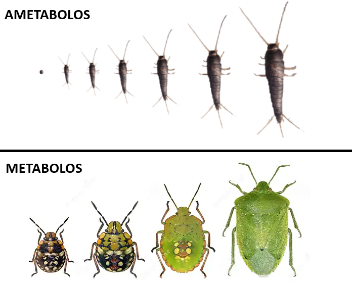
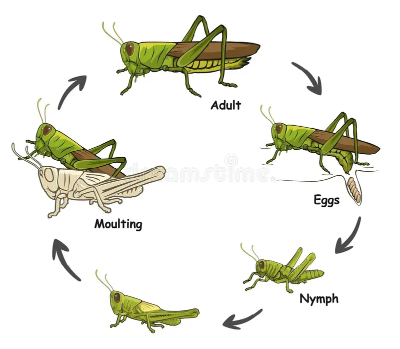
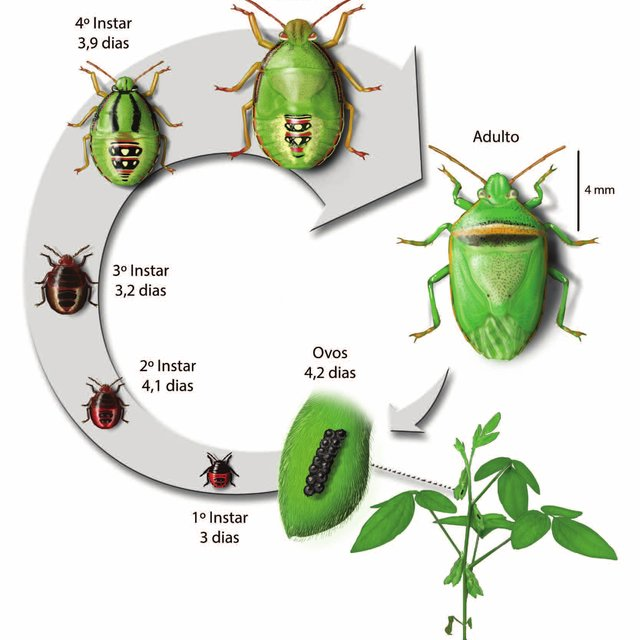
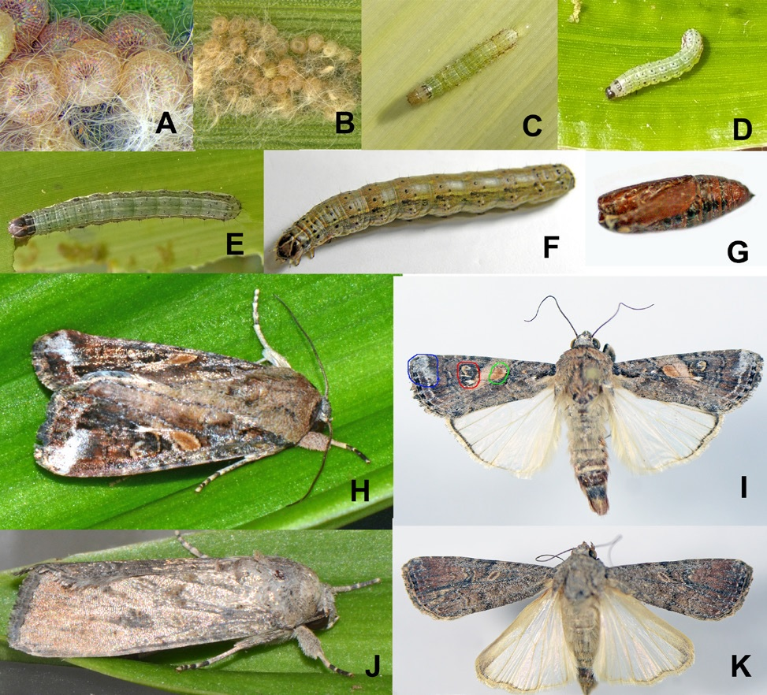
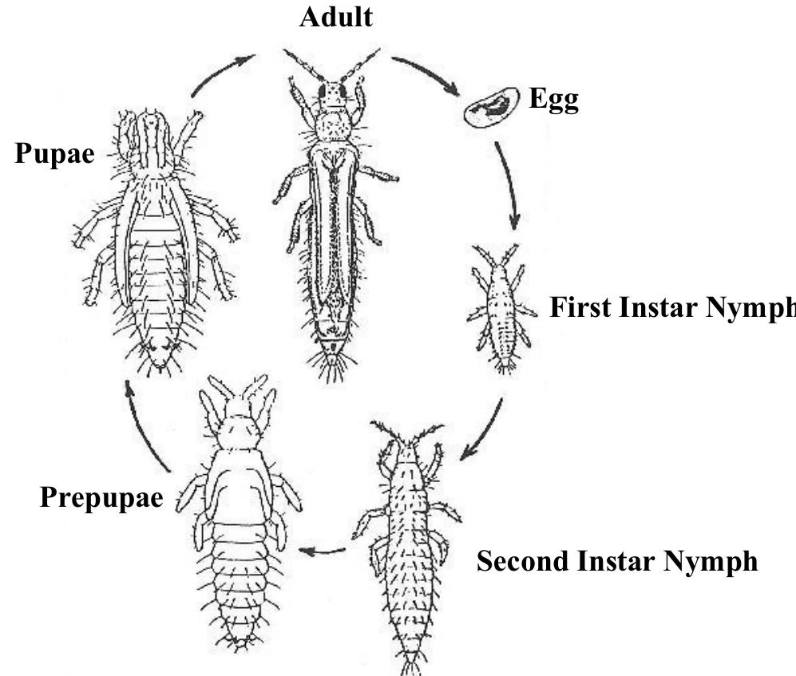

Apunte de cátedra · Zoología Agrícola
🦋 Metamorfosis de insectos
La historia de cómo unos bichos anónimos del suelo modificaron para siempre los ecosistemas y la agricultura.
- La metamorfosis es la sucesión de cambios que atraviesa un insecto desde que eclosiona del huevo hasta el estado adulto.
- Ametábolos: sin metamorfosis verdadera. El juvenil ya es casi igual al adulto, solo aumenta de tamaño. Sin alas, sin importancia agronómica.
- Metamorfosis incompleta (hemimetábola): huevo → ninfa → adulto. Ej: chinches, chicharritas, langostas.
- Metamorfosis intermedia: huevo → ninfa → adulto, pero las últimas ninfas quedan inmóviles un tiempo antes de mudar a adultas. Ej: trips.
- Metamorfosis completa (holometábola): huevo → larva → pupa → adulto. Ej: picudos, moscas, abejas, polillas.
¿Por qué existen insectos con metamorfosis completa? ¿Por qué simplemente no son todos de metamorfosis incompleta?
Si lográs responder esto, habrás comprendido el fundamento de toda la unidad. Guardalo en la cabeza — vamos a volver sobre esta pregunta en cada capítulo.
🗺️ El camino de la metamorfosis
Cuatro formas distintas de resolver el mismo problema: crecer y transformarse
🌱 Capítulo 1 — Los primeros insectos: los ametábolos
Conocemos bastante bien nuestra propia historia evolutiva: descendemos de antepasados primates y, a lo largo de millones de años, fuimos cambiando anatómica y funcionalmente hasta llegar a nuestra forma actual.
Los insectos atravesaron un proceso semejante. Moscas, polillas, escarabajos y picudos no siempre tuvieron el aspecto actual: evolucionaron a partir de formas mucho más primitivas, pequeñas y simples, que ni siquiera podían volar grandes distancias.
Los primeros insectos eran organismos relativamente sencillos. Muchos carecían completamente de alas (apterigotos) y tanto los adultos como su descendencia permanecían asociados al mismo ambiente durante toda su vida.
Su característica más importante era el desarrollo: al eclosionar del huevo, el juvenil ya era prácticamente una copia del adulto. La única diferencia real era el tamaño. Con cada muda crecía, pero sin modificar de forma importante su cuerpo.

Hoy todavía existen representantes vivos de este grupo: verdaderos "fósiles vivientes" que conservan las características de los primeros insectos que habitaron la Tierra, antes de que existiera la metamorfosis.
Escasa. No constituyen plagas relevantes ni generan daños de consideración sobre los cultivos. Su valor es comprender cómo eran los insectos antes de la metamorfosis.
Ejemplo:
Zygentoma
Pececillos de plata / lepismátidos — Lepisma saccharina

Aunque mudan varias veces, entre un estadio y otro no aparecen estructuras nuevas ni cambios importantes en la forma corporal. El juvenil mantiene prácticamente el mismo aspecto que el adulto durante todo su desarrollo — mudar no es lo mismo que metamorfosear.
✏️ Si entendiste esta parte: ¿por qué a los ametábolos no se los considera insectos con metamorfosis, aunque sí realizan varias mudas durante su desarrollo?
🦗 Capítulo 2 — Metamorfosis incompleta
Igual que los ametábolos, estos insectos nacen con un aspecto muy semejante al del adulto. A medida que crecen van desarrollando progresivamente los esbozos alares, aumentan de tamaño y completan sus órganos reproductores.

A esta sucesión ordenada de cambios, desde que el insecto eclosiona hasta que llega a adulto, la llamamos metamorfosis.

A diferencia de los ametábolos, la ninfa ya no es una copia casi idéntica del adulto: conserva la misma organización corporal (cabeza, tórax, abdomen bien diferenciados) pero todavía debe completar alas y aparato reproductor. Cada muda es un paso más hacia el estado adulto.
Esa similitud entre ninfa y adulto se explica en el huevo: el embrión completa gran parte de su desarrollo antes de eclosionar. Por eso a estos insectos se los llama ortogénicos.
HUEVO → NINFA → ADULTO
La ninfa es el estado juvenil: muy parecida al adulto, pero sin alas completas ni órganos sexuales funcionales.
Crece mediante estadios ninfales (generalmente 5), separados por mudas.
Protagonistas conocidos del campo:
Orthoptera
Langostas, tucuras — Schistocerca cancellata
Hemiptera
Chinches, pulgones, chicharritas — Nezara viridula


✏️ Buscá otro insecto de metamorfosis incompleta y explicá por qué pertenece a este grupo. Compáralo con un ametábolo: ¿cuáles son las diferencias?
Esta forma de metamorfosis tiene una desventaja evolutiva: como ninfa y adulto comparten morfología y recursos, ocupan el mismo ambiente y compiten entre sí. En un lote de soja con chinches vas a encontrar, todos juntos, huevos, ninfas de distintos estadios y adultos alimentándose sobre las mismas plantas.
Esa competencia interna entre generaciones fue la presión que impulsó una de las grandes innovaciones evolutivas de los insectos: repartir las funciones de alimentación, crecimiento, dispersión y reproducción entre etapas distintas del ciclo de vida. Así apareció la metamorfosis completa.
✏️ Para pensar: ¿por qué a la ninfa y al adulto de metamorfosis incompleta les cuesta compartir el mismo cultivo?
🐛 Capítulo 3 — Metamorfosis completa
Representa uno de los mayores avances evolutivos de los insectos: el ciclo de vida se dividió en etapas altamente especializadas, cada una con una función biológica distinta.
La larva se especializa en alimentarse, crecer y acumular reservas. El adulto se especializa en dispersarse y reproducirse. Esa división reduce la competencia entre ambos estados y aprovecha mucho mejor los recursos disponibles.
Otra diferencia clave está en el huevo: el tiempo de desarrollo embrionario es menor, así que al eclosionar el individuo todavía no tiene la organización corporal del adulto. Por eso las formas juveniles son completamente distintas y se las llama progénicas.
La larva no necesita parecerse al adulto porque no va a cumplir las mismas funciones. Su único objetivo es comer, crecer y acumular energía. Por eso tiene un aparato bucal muy eficiente y un cuerpo diseñado exclusivamente para alimentarse — sin alas ni órganos reproductores funcionales, porque todavía no los necesita.
Como la larva y el adulto son tan distintos, hace falta un estado intermedio donde ocurra la reorganización corporal completa: la pupa. Ahí los tejidos larvales se reorganizan y se desarrollan alas, musculatura de vuelo y órganos reproductores.
HUEVO → LARVA → PUPA → ADULTO
Por incorporar el estado pupal y la transformación profunda que ocurre en él, este desarrollo se llama metamorfosis completa.

Cuando la larva alcanza su último estadio, entra en pupa: deja de alimentarse y ocurre una reorganización interna profunda. De ahí emerge la polilla adulta, lista para dispersarse, encontrar nuevas plantas hospedantes y reproducirse.
✏️ ¿Entendiste la diferencia? Explicá con tus palabras: ametábolos vs. metábolos, y dentro de estos, incompleta vs. completa.
🌾 Capítulo 4 — Metamorfosis intermedia
Un caso particular presente en insectos de gran importancia agrícola, como los trips y las moscas blancas.
Lo importante: estos insectos pertenecen al grupo de metamorfosis incompleta, porque sus juveniles nacen con una organización corporal semejante a la del adulto — también son ortogénicos.
La diferencia con el resto de los hemimetábolos es que, antes de transformarse en adultos, las últimas ninfas quedan inmóviles durante un corto período. Ese reposo puede parecer una pupa, pero no lo es: no hay la reorganización profunda propia de la metamorfosis completa.
Por eso a estos estados inmóviles se los llama pseudopupa (o prepupa y pseudopupa, según el grupo). Es una ninfa quieta antes de la muda final a adulto, no una verdadera pupa.

📊 Comparativa rápida
| Grupo | Fases | Ejemplo |
|---|---|---|
| 🌱 Ametábolos | Huevo → Juvenil (= adulto mini) → Adulto | Lepisma saccharina |
| 🦗 Incompleta | Huevo → Ninfa (1-5) → Adulto | Schistocerca cancellata |
| 🌾 Intermedia | Huevo → Ninfa → Pseudopupa → Adulto | Trips |
| 🐛 Completa | Huevo → Larva → Pupa → Adulto | Spodoptera frugiperda |
💭 Mini quiz para repasar
Tocá cada pregunta para intentar responder antes de ver la pista
¿Por qué existen insectos con metamorfosis completa? ¿Por qué no son todos de metamorfosis incompleta?
Porque en la metamorfosis incompleta la ninfa y el adulto se parecen y compiten por el mismo recurso al mismo tiempo. La metamorfosis completa resuelve ese problema separando funciones: la larva se dedica a comer y crecer, el adulto a dispersarse y reproducirse — mucho más eficiente.
¿Por qué a los ametábolos no se los considera insectos con metamorfosis, aunque mudan varias veces?
Porque entre muda y muda solo cambia el tamaño: no aparecen estructuras nuevas ni cambios de forma. El juvenil ya es una copia del adulto desde que nace.
¿Cuál es la diferencia entre "ortogénico" y "progénico"?
Ortogénico (metamorfosis incompleta/intermedia): el embrión se desarrolla casi por completo dentro del huevo, así que la ninfa nace parecida al adulto. Progénico (metamorfosis completa): el desarrollo embrionario es más corto, así que la larva nace completamente distinta al adulto.
¿Qué es una pseudopupa y en qué se diferencia de una pupa verdadera?
La pseudopupa es un estadio ninfal inmóvil, propio de la metamorfosis intermedia (trips, moscas blancas). Se parece a una pupa por estar quieta, pero no implica la reorganización corporal profunda de una pupa verdadera de metamorfosis completa.
Nombrá un orden con importancia agronómica para cada tipo de metamorfosis (incompleta y completa) con un ejemplo.
Incompleta: Orthoptera, ej. Schistocerca cancellata. Completa: Lepidoptera, ej. Spodoptera frugiperda.